The Atacama Cosmology Telescope: Probing the Baryon Content of SDSS DR15 Galaxies with the tSZ and kSZ Effects — 图表版¶
arXiv: 2101.08373 ｜ 作者: Vavagiakis et al. ｜ 年份: 2021 阅读日期: 2026-04-08
本文件的定位：逐图逐表解读，目标是"自包含的完整指南"——只看图表版也能理解这篇论文讲了什么。
论文一句话：通过对 34 万个 SDSS DR15 发光红巨星系在 ACT+Planck 地图上叠加 tSZ 信号（最高 12\(\sigma\)），并与伴随论文的 kSZ 配对动量测量联合，估计暗物质晕的光学深度，发现重子含量占 NFW 理论预测的 1/3 到全部。
Figure 1 — 天区覆盖与噪声分布¶
文件：Figure1a.png / Figure1b.png | 对应章节：§I, §II | 关键公式：无
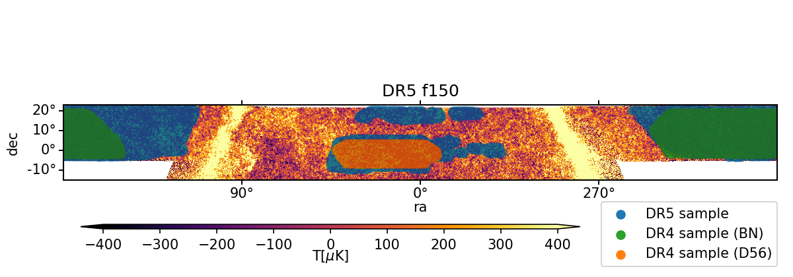
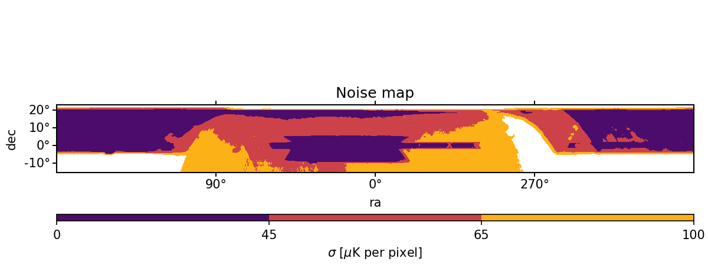
图说什么¶
上图：ACT+Planck DR5 f150 地图叠加 343,647 个 SDSS DR15 源（蓝色点），覆盖约 3700 deg²。绿色和橙色区域分别标示 BN（1633 deg²）和 D56（456 deg²）区域，由 ILC 地图覆盖。 [原文]
下图：DR5 f150 共加地图的逆白噪声方差图（inverse white noise variance map），以等式 Carré 投影的 0.5 角分像素显示。紫色区域标示 45 μK/pixel 截断——最终分析采用的更保守的噪声截断。橙色/黄色高噪声区域与 27% 的 DR15 样本重叠，被剔除。 [原文]
怎么看¶
- 上图是赤道坐标系投影，赤经从右到左增大。蓝色点密度反映 SDSS BOSS 巡天的天区选择函数。
- 下图的颜色编码：深紫色 = 低噪声（高逆方差）= 观测时间长的区域；橙/黄 = 高噪声区域。
- 选取 45 μK/pixel 截断而非 65 μK/pixel，是基于信号盲的不确定度分析：更保守的截断虽然损失 27% 的源，但显著改善了 jackknife 误差条。 [原文]
需要的物理¶
- 逆方差加权（inverse variance weighting）：当不同观测位置的噪声水平不同时，给噪声低的区域更大权重，可以最小化叠加后的总方差。这就是为什么需要噪声方差图来做截断和加权。 [补充]
- 银道面掩模和点源掩模是两个额外的天区截断：前者避免银河系尘埃/同步辐射污染，后者去掉明亮射电源或红外源，防止它们的信号被误认为 SZ 信号。 [补充]
Figure 2 — 红移分布¶
文件：Figure2.png | 对应章节：§II.B | 关键公式：无
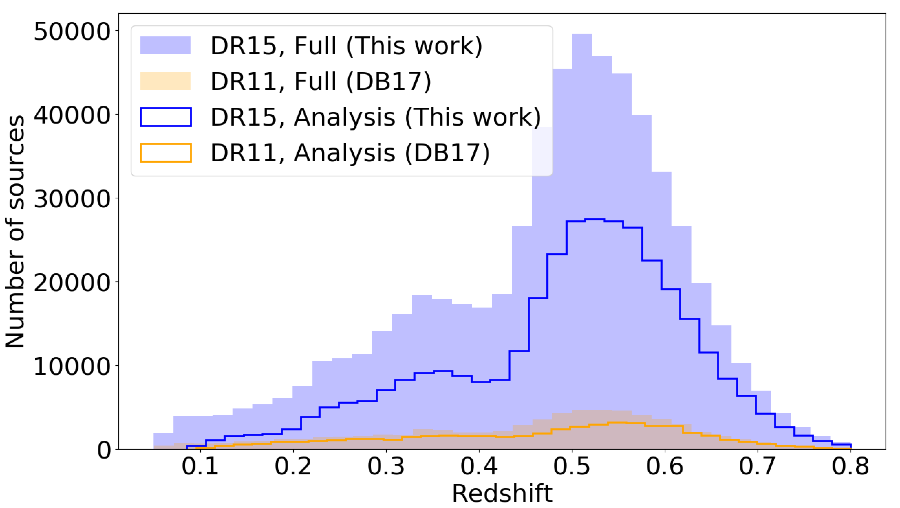
图说什么¶
比较 SDSS DR15 总样本（602,461 个源）和经过截断后的分析样本（343,647 个源）的红移分布，以及 DB17 中使用的 DR11/DR3 样本。DR15 分析样本的红移范围为 \(0.08 < z < 0.8\)，平均红移 \(\langle z \rangle = 0.49\)。 [原文]
怎么看¶
- x 轴：红移 \(z\)。
- y 轴：每个红移 bin 内的星系数量。
- DR15 样本（蓝色）比 DB17 样本大约 5 倍，这是信噪比提升的主要来源。
- 红移分布的峰值在 \(z \approx 0.45\)–\(0.55\)，对应 BOSS CMASS 样本的设计红移范围。 [补充]
需要的物理¶
- 发光红巨星系（LRG）是质量大、颜色偏红的椭圆星系，它们是大质量暗物质晕的良好示踪物。BOSS 巡天专门针对它们进行光谱观测以获取精确红移。 [补充]
- 平均红移 \(z \approx 0.5\) 意味着 2.1′ 的孔径半径对应约 0.8 Mpc 的物理尺度——大致是群/团暗物质晕的维里半径量级。 [原文]
Figure 3 — 叠加子图¶
文件：Figure3_DR5f150.png / Figure3_DR5f090.png / Figure3_DR4ILC.png | 对应章节：§III | 关键公式：Eq. 1–2
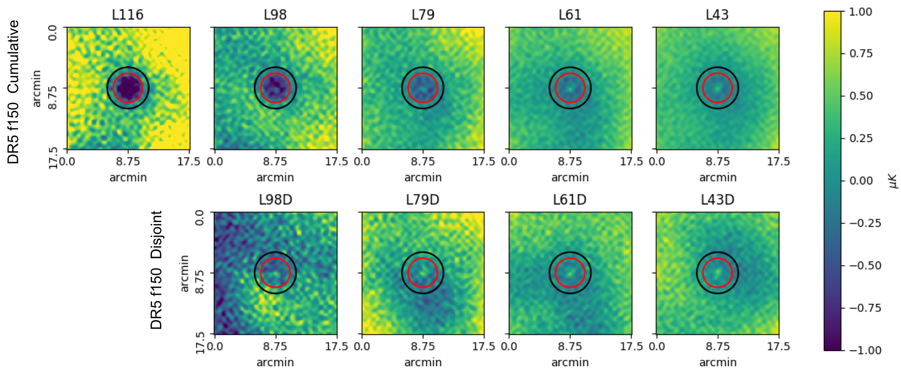
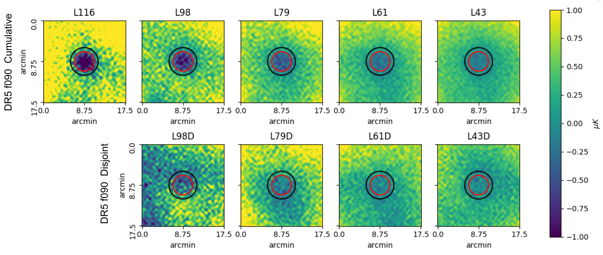
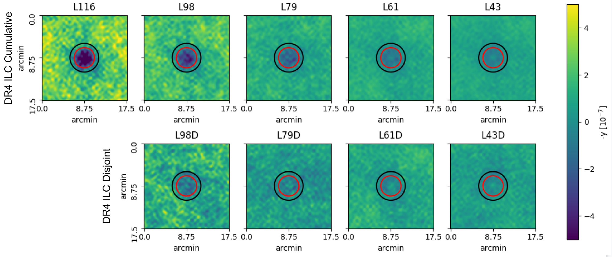
图说什么¶
三张地图（DR5 f150、DR5 f090、DR4 ILC）在 5 个累积 bin（上行）和 4 个独立 bin（下行）上的加权平均叠加子图。每张子图为 18′×18′，以星系位置为中心。红色圆圈标示 AP 圆盘半径 \(R_1 = 2.1'\)，黑色圆圈标示外环外径 \(\sqrt{2} R_1\)。子图已用环均值归一化（环内像素平均值为零）。 [原文]
怎么看¶
- DR5 f150（前两行）：中心清晰可见负信号（tSZ 在 150 GHz 产生温度下降），但也能看到亮斑——这是波束尺度上的尘埃辐射。L116（最高光度）bin 的亮斑反而最不明显。
- DR5 f090（中间两行）：tSZ 在 98 GHz 的信号更强（\(|f_{\rm SZ}|\) 更大），中心的负信号更深。尘埃亮斑在 f090 中不明显——因为尘埃辐射在较低频率更弱。
- DR4 ILC（底部两行）：注意单位是负 \(y\)（取负以便与温度地图比较），中心信号为正值代表 tSZ 检测。ILC 已经通过多频率组合分离了 tSZ，尘埃的直接污染较小，但仍可在径向轮廓中看到微小影响。
- 从左到右光度递减，tSZ 信号也递弱——符合"更大质量晕→更热更多气体→更强 tSZ"的预期。 [原文]
需要的物理¶
- tSZ 的频率依赖：\(f_{\rm SZ} = x(e^x+1)/(e^x-1) - 4\)，其中 \(x = h\nu / k_B T_{\rm CMB}\)。在 150 GHz 处 \(f_{\rm SZ} \approx -0.96\)（负信号），98 GHz 处 \(f_{\rm SZ} \approx -1.53\)（更强的负信号），约 217 GHz 为零点。 [原文]
- 尘埃辐射的频率依赖：修正黑体谱 \(\propto \nu^{\beta+3}\)，高频更强。因此 150 GHz 比 98 GHz 受尘埃污染更严重。 [补充]
Figure 4 — 叠加子图的径向平均¶
文件：Figure4.png | 对应章节：§III | 关键公式：无
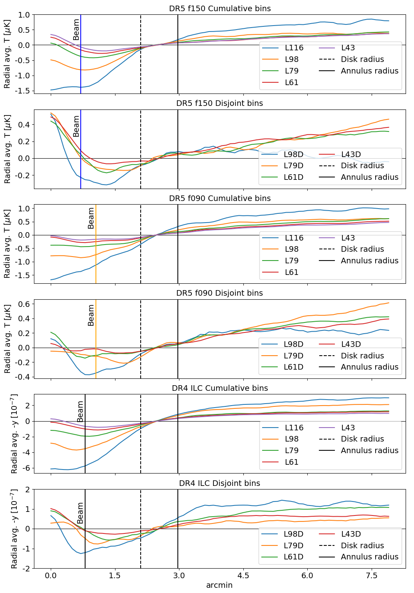
图说什么¶
将叠加子图重新像素化为 0.1′/pixel 后，沿径向方向取平均，得到从中心到外环的径向轮廓。三张地图（f150：蓝色，f090：橙色，ILC：黑色）分别画出。垂直虚线标示 AP 圆盘半径 2.1′，实线标示外环外径。三条竖线标示各地图的波束半径。 [原文]
怎么看¶
- tSZ 信号表现为从中心到外围的负值（或 ILC 中的正值），在约 2′ 处变平——说明 tSZ 信号集中在 2′ 以内。
- 关键特征：在 f150 地图中，中心（\(r < 1'\)）出现明显的正向偏移（亮斑），在 L43、L61、L79 等 bin 中尤其明显。这来自源星系的尘埃辐射。在 f090 中这个亮斑消失了——确认其频率依赖性与尘埃一致。 [原文]
- 最高光度 bin（L116）的中心亮斑反而最小，可能因为高光度 LRG 是更老、更"passive"的椭圆星系，恒星形成率更低，尘埃更少。 [补充]
需要的物理¶
- AP 信号 = 圆盘均值 − 环均值：径向轮廓让我们看到信号的空间分布。如果 tSZ 信号完全在圆盘内，环提供的是纯背景估计。如果信号延伸到环内，AP 会低估真实 tSZ 信号。 [补充]
- 中心亮斑的角尺度与波束（1.3′ FWHM for f150）相当，说明尘埃源是空间上未分辨的——对应源星系本身而非周围结构。 [原文]
Figure 5 — 尘埃校正效果¶
文件：Figure5_rescaled.png | 对应章节：§III.B, §III.C | 关键公式：Eq. 3–4
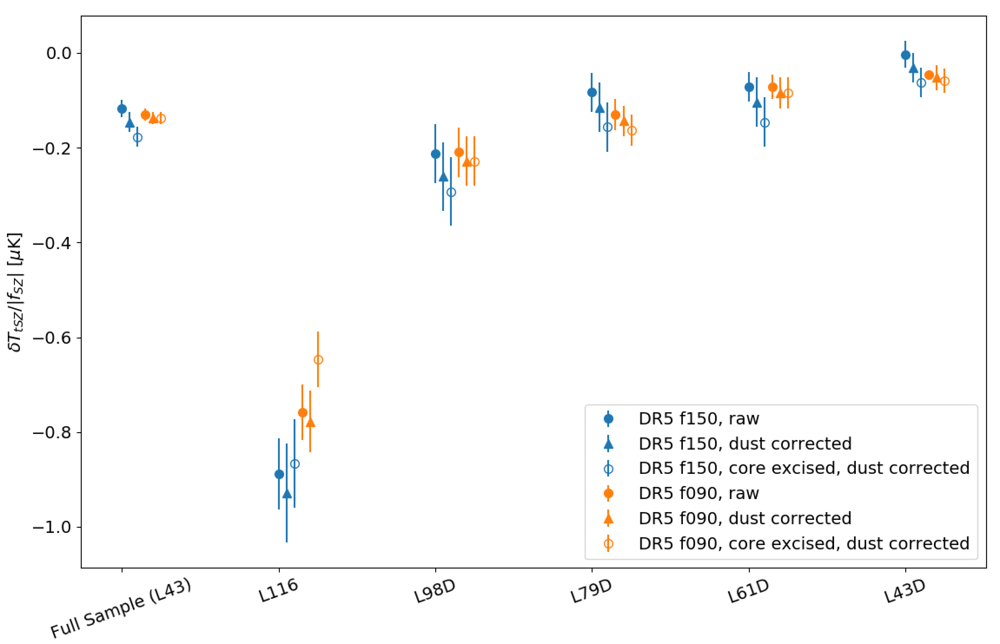
图说什么¶
对比了 f150 和 f090 地图中三种处理方式的 AP tSZ 温度信号（已乘以 \(|f_{\rm SZ}|\) 以统一量纲）：原始 2.1′ AP（蓝色/橙色圆圈）、Herschel 尘埃校正后（三角形）、去核 AP（去除波束尺度中心盘后，方块）。误差条为 \(1\sigma\) jackknife 估计。 [原文]
怎么看¶
- Herschel 尘埃校正（三角形 vs 圆圈）：对温度信号的影响很小（<\(1\sigma\)），因为尘埃贡献在 150 GHz 仅约 0.03–0.04 μK（Table III），远小于 tSZ 信号本身。但校正后不确定度略增（因为尘埃估计的误差被传播进来）。
- 去核 AP（方块 vs 圆圈）：去掉中心波束范围内的像素后，L116 bin 的信号下降最明显——因为那里 tSZ 信号最集中但尘埃最少，去核丢失的主要是 tSZ 信号而非尘埃。对其他 bin 影响 <\(1\sigma\)。
- 最终分析采用 Herschel 尘埃校正但不去核的方案。 [原文]
需要的物理¶
- 修正黑体尘埃模型（Eq. 4）：\(I(\nu) = A_d [{\nu(1+z)}/{\nu_0}]^{\beta_d+3} \times [e^{h\nu_0/k_BT_d}-1]/[e^{h\nu(1+z)/k_BT_d}-1]\)，其中 \(\beta_d \approx 1.2\) 是尘埃光谱指数，\(T_d \approx 21\)–\(30\) K 是尘埃温度。用 Herschel SPIRE 250/350/500 μm 数据拟合参数，然后外推到 150 和 98 GHz。 [原文]
- 尘埃辐射在 CMB 差分温度单位下需要一个 \([dB(\nu,T)/dT]^{-1}\) 因子来从强度单位转换。 [原文]
Table II — 光度 bin 的属性¶
对应章节：§II.B | 关键公式：无
表说什么¶
列出了每个光度 bin 的光度截断、等价晕质量截断、平均恒星质量、源数量 \(N\)、平均光度 \(\langle L \rangle\)、和平均红移 \(\langle z \rangle\)，分别对应 DR5（f150/f090）和 ILC 样本。标星号的 bin（L43、L61、L79 及其独立 bin）是与 C21 联合分析的 bin。 [原文]
怎么看¶
| Bin | \(N\)（DR5） | \(\langle M_{\rm vir} \rangle\) cut / \(10^{13} M_\odot\) | \(\langle z \rangle\) |
|---|---|---|---|
| L43（全样本） | 343,647 | >0.52 | 0.49 |
| L79 | 103,159 | >1.66 | 0.53 |
| L116 | 23,504 | >3.70 | 0.58 |
| L43D（最低质量独立 bin） | 130,577 | 0.52–1.00 | 0.48 |
| L79D | 56,203 | 1.66–2.59 | 0.51 |
- 源数量从 L43 的 34 万递减到 L116 的 2.3 万——更高光度的源更稀少。
- 平均红移随光度略增（\(0.48 \to 0.58\)），因为 BOSS 选择函数在更高红移处偏好更亮的源。
- ILC 样本比 DR5 样本小（因 ILC 地图覆盖面积更小），但平均光度和红移一致。 [原文]
需要的物理¶
- 丰度匹配（abundance matching）：将恒星质量-光度关系（\(M_*/L = 3.0\)，Chabrier IMF）和恒星质量-晕质量关系（Kravtsov 2014）结合，将光度映射到晕质量。这是一种统计方法，不是逐个星系的直接测量。 [原文]
Figure 6 — Compton-\(y\) 测量¶
文件：Figure6.png | 对应章节：§V.A | 关键公式：Eq. 1
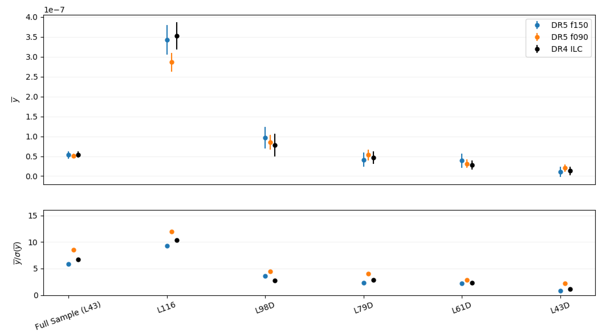
图说什么¶
上面板：三张地图在 5 个独立 bin + 全样本上的平均 Compton-\(\bar{y}\)（2.1′ 孔径内），包含尘埃和波束校正。下面板：对应的信噪比 \(\bar{y}/\sigma(\bar{y})\)。 [原文]
怎么看¶
- 上面板：\(\bar{y}\) 从 L43D 的约 \(10^{-8}\) 级别增大到 L116 的约 \(3.5 \times 10^{-7}\)——光度（≈ 质量）越高，tSZ 信号越强。三张地图（f150 蓝色、f090 橙色、ILC 黑色）在所有 bin 上高度一致。
- 下面板：信噪比从 L43D 的约 1\(\sigma\) 增大到 L116 和全样本的 ~10\(\sigma\)。f090 的信噪比通常最高——因为 \(|f_{\rm SZ}|\) 更大，tSZ 信号更强。
- 独立 bin 的信噪比低于累积 bin——因为源数量更少。 [原文]
需要的物理¶
- Compton-\(y\) 参数是沿视线的电子热压力积分：\(y = (\sigma_T / m_e c^2) \int n_e k_B T_e \, dl\)。它同时依赖于气体密度和温度，因此高质量晕（更热、更密的 ICM）有更高的 \(y\)。 [补充]
- 波束校正：f090 的波束（2.1′ FWHM）比 f150（1.3′）更大，更多信号被"抹平"到 AP 环中。校正因子为 1.3（31% 上调）。ILC 的波束（1.6′）需要乘以 0.95（5% 下调——因为 f150 波束有次级旁瓣）。 [原文]
Table IV — 光学深度估计¶
对应章节：§V | 关键公式：Eq. 3, 5
表说什么¶
汇总了三张地图在所有 bin 上的光学深度估计：理论预测 \(\bar{\tau}_{\rm theory}\)、tSZ 估计 \(\bar{\tau}_{\rm tSZ}\)（统计 + 系统误差）、tSZ 比例 \(f_{c,{\rm tSZ}}\)、以及 C21 的 kSZ 估计 \(\bar{\tau}_{\rm kSZ}\) 和 \(f_{c,{\rm kSZ}}\)。 [原文]
怎么看¶
以 DR5 f150 为例（其他地图结论相似）：
| Bin | \(\bar{\tau}_{\rm theory}\) | \(\bar{\tau}_{\rm tSZ}\) | \(f_{c,{\rm tSZ}}\) | \(\bar{\tau}_{\rm kSZ}\) | \(f_{c,{\rm kSZ}}\) |
|---|---|---|---|---|---|
| L43（全样本） | \(1.39 \times 10^{-4}\) | \(1.28 \pm 0.10\) | 0.92 | \(0.54 \pm 0.09\) | 0.39 |
| L43D | \(0.70\) | \(0.59 \pm 0.35\) | 0.85 | \(0.46 \pm 0.24\) | 0.66 |
| L61D | \(1.06\) | \(1.10 \pm 0.25\) | 1.04 | \(0.72 \pm 0.26\) | 0.68 |
| L79 | \(2.42\) | \(1.92 \pm 0.10\) | 0.79 | \(0.88 \pm 0.18\) | 0.36 |
- tSZ 的 \(f_c\) 在 0.72–1.04 之间——接近或达到理论预测。
- kSZ 的 \(f_c\) 系统性偏低（0.33–0.68），但独立 bin 误差较大。
- L79 bin 中 tSZ 和 kSZ 的 \(f_c\) 差异最大（\(\sim\)0.79 vs \(\sim\)0.36），是 2–3\(\sigma\) 的不一致。 [原文]
需要的物理¶
- 理论 \(\bar{\tau}\)（Eq. 5）：\(\bar{\tau}_{\rm theory} = \sigma_T x_e X_H (1-f_\star) f_b M_{\rm vir}(<\theta_{2.1'}) / (d_A^2 m_p)\)，假设晕内气体遵循 NFW 剖面。\(f_b = \Omega_b/\Omega_M = 0.157\) 是宇宙重子比例，\(f_\star\) 是恒星质量比例。 [原文]
- 系统误差来自 \(\bar{y}\)-\(\bar{\tau}\) 标度关系（Eq. 3）中 \(\ln(\tau_0)\) 的 4% 和 \(m\) 的 8% 不确定性，通过蒙特卡罗传播。 [原文]
Figure 7 — 理论预测比例 \(f_c\)¶
文件：Figure7.png | 对应章节：§V.C | 关键公式：Eq. 3, 5
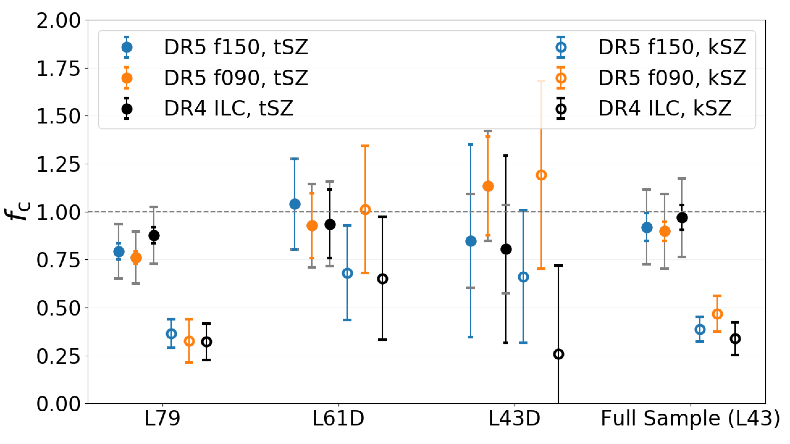
图说什么¶
全样本（L43）的三个独立子 bin 和全样本本身的 \(f_c = \bar{\tau}_{\rm obs} / \bar{\tau}_{\rm theory}\)：tSZ 估计（实心圆）和 kSZ 估计（空心圆），分别来自三张地图。灰色误差条标示 tSZ 的系统不确定性。 [原文]
怎么看¶
- 实心圆（tSZ）：\(f_c\) 在 0.7–1.0 之间，说明 tSZ 方法能"看到"大部分理论预测的重子。
- 空心圆（kSZ）：\(f_c\) 系统性低于 tSZ，在 0.3–0.7 之间。
- 关键差异：L43D 和 L61D 两个 bin 中，tSZ 和 kSZ 在 \(1\sigma\) 内一致（空心圆的误差条与实心圆重叠）。但在 L79 bin 中，kSZ 的 \(f_c\) 明显更低——这驱动了全样本 L43 中的 2–3\(\sigma\) 差异。 [原文]
- 三张地图的 tSZ 结果（蓝/橙/黑色实心圆）高度一致，验证了测量的稳健性。 [原文]
需要的物理¶
- \(f_c < 1\) 意味着在 2.1′ 孔径内观测到的重子少于 NFW 预测——可能因为部分重子在晕外围或被 AGN 反馈推到更远处。 [补充]
- \(f_c\) 不应被视为精确的重子比例测量，因为理论 \(\bar{\tau}\) 依赖于光度-质量关系的不确定性，这些误差未被完整传播。\(f_c\) 的主要价值在于 tSZ 与 kSZ 之间的相对比较。 [原文]
Figure 8 — \(\bar{\tau}_{\rm kSZ}\) vs \(\bar{y}_{\rm tSZ}\) 与模拟标度关系¶
文件：Figure8.png | 对应章节：§V.C | 关键公式：Eq. 3
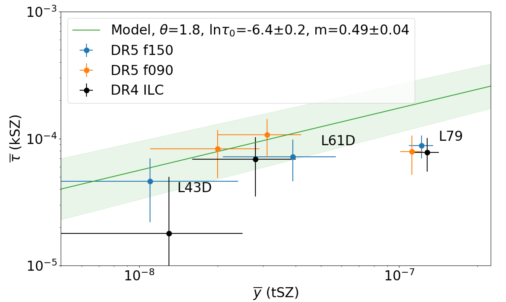
图说什么¶
将三个联合分析独立 bin 的 tSZ \(\bar{y}\) 和 kSZ \(\bar{\tau}\) 绘制在同一张 \(\bar{y}\)-\(\bar{\tau}\) 图上，叠加 Battaglia（2017）流体动力学模拟的幂律标度关系（绿色实线，\(1\sigma\) 阴影包络）。三张地图分别标出（蓝/橙/黑色）。 [原文]
怎么看¶
- 绿色模型线：\(\ln(\bar{\tau}) = -6.40 + 0.49 \ln(\bar{y}/10^{-5})\)，来自 AGN 反馈模型模拟，孔径 \(\Theta = 1.8'\)（最接近本文 2.1′ 的可用标度关系）。
- L43D 和 L61D：数据点落在模型线及其 \(1\sigma\) 阴影内——tSZ 和 kSZ 的独立路径与模拟一致。
- L79：kSZ 的 \(\bar{\tau}\) 偏低，数据点落在模型线以下——这个 bin 的 kSZ 信号似乎给出了偏低的光学深度。
- 不同地图的数据点高度相关（因为共享了部分底层数据），不应视为完全独立。 [原文]
需要的物理¶
- 这张图直接展示了通向经验 \(\bar{y}\)-\(\bar{\tau}\) 关系的路线：如果未来更多 bin 和更高信噪比的数据都落在一条一致的曲线上，就可以用观测直接标定这个关系，而不必依赖模拟。 [重述]
- L79 bin 偏离模型线，可能因为 kSZ 拟合中固定的宇宙学参数（如 \(\sigma_8\)、晕质量输入）不够准确，或者该质量范围内的晕物理（如 AGN 反馈强度）与模拟假设不同。 [重述]
Figure 9 (Appendix B) — 光度分 bin 直方图¶
文件：Figure_AppendixB.png | 对应章节：Appendix B | 关键公式：无
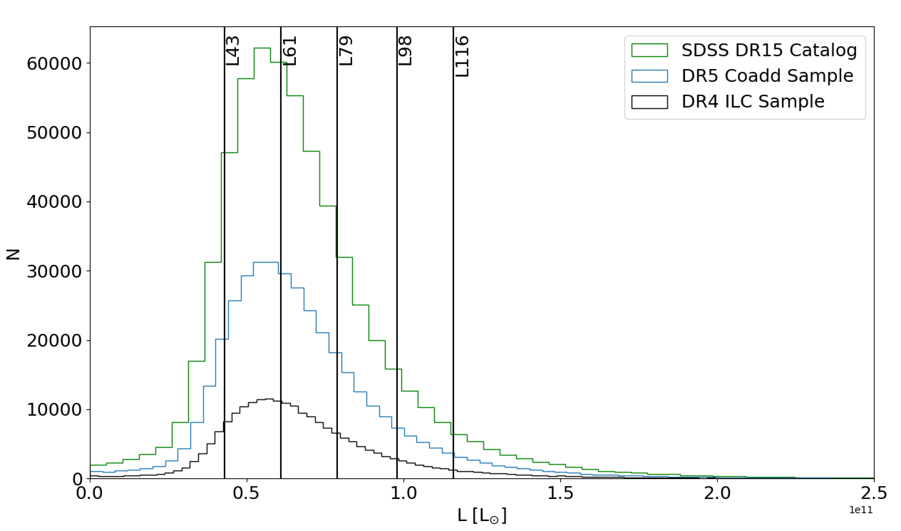
图说什么¶
SDSS DR15 的光度分布直方图，叠加了 5 条光度截断线。绿色为全样本（602k），蓝色为 DR5 分析样本（343k），黑色为 ILC 样本（190k）。 [原文]
怎么看¶
- 光度分布从 \(4.3 \times 10^{10} L_\odot\) 开始（最低截断），在 \(\sim 6 \times 10^{10} L_\odot\) 附近达到峰值，然后快速下降。
- 底部三条截断（L43、L61、L79）被设计为每个独立 bin 包含约 10 万个源——确保 kSZ 配对动量估计有足够信噪比。
- 顶部两条截断（L98、L116）仅用于 tSZ 分析——这些高光度 bin 中源太少无法有效做 kSZ，但 tSZ 叠加信号足够强。 [原文]
需要的物理¶
- bin 的设计体现了 tSZ 和 kSZ 对源数量的不同需求：tSZ 叠加的信噪比 \(\propto \bar{y}\sqrt{N}\)，源越多或信号越强都有利；kSZ 的配对动量估计器需要足够的源对（pairs），源太少会导致协方差矩阵不稳定。 [补充]
图间逻辑链¶
Fig 1（天区覆盖 + 噪声截断）
↓ 选出 343,647 个源
Fig 2（红移分布：确认样本量比 DB17 提升 5 倍）
↓ 按光度分 bin
Fig 9（光度分布 + bin 设计）
↓ 切子图、叠加
Fig 3（叠加子图：直接可视化 tSZ 信号 + 尘埃亮斑）
↓ 径向轮廓
Fig 4（径向平均：确认尘埃在 f150 中心、f090 无影响）
↓ 尘埃校正 + 去核 AP 比较
Fig 5（尘埃校正效果：<1σ 影响，确认方案）
↓ 提取 ȳ
Fig 6（Compton-y 测量：三地图一致，最高 12σ）
↓ ȳ → τ̄（模拟标度关系） + kSZ τ̄（C21）
Table IV（光学深度汇总 + fc 计算）
↓ tSZ vs kSZ vs theory 对比
Fig 7（fc 条形图：2/3 bin 一致，L79 bin 不一致）
↓ ȳ-τ̄ 关系检验
Fig 8（kSZ τ̄ vs tSZ ȳ 与模拟曲线：2/3 bin 在模型线上）
全局结论：ACT+Planck 的 tSZ 叠加测量在三张独立地图上一致地检测到高信噪比信号；tSZ 和 kSZ 在低质量 bin 中给出一致的光学深度估计，但在最高质量 bin 中存在 2–3\(\sigma\) 张力。观测到的重子含量占理论预测的 1/3 到全部——与失踪重子存在于晕外围的图景一致。